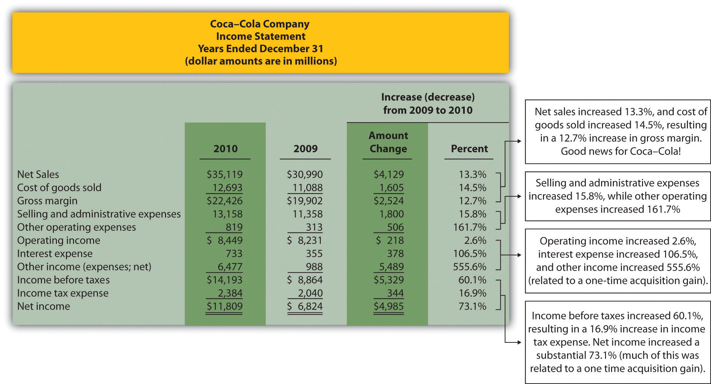
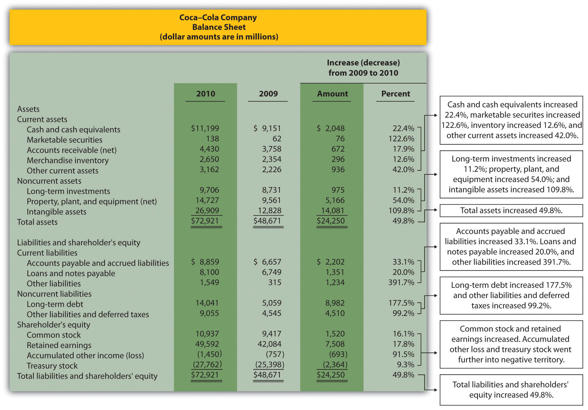
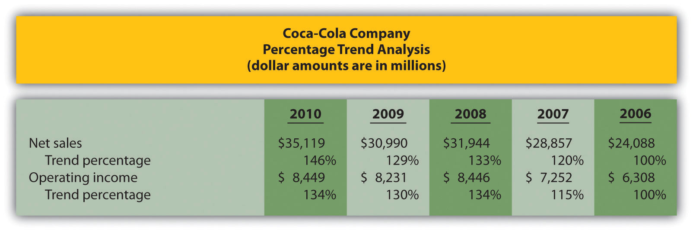
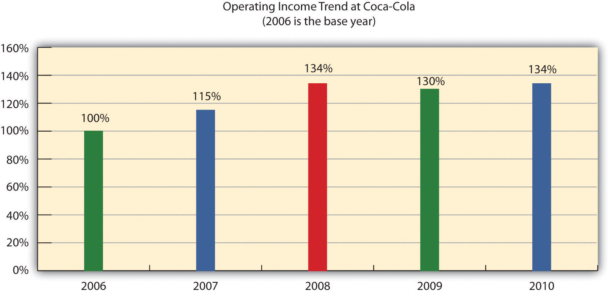
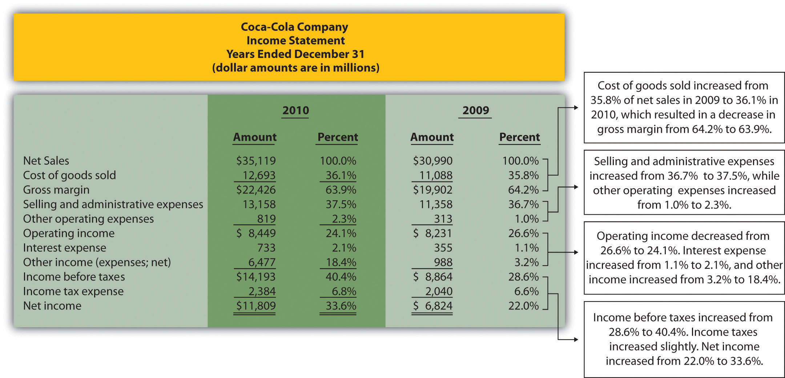
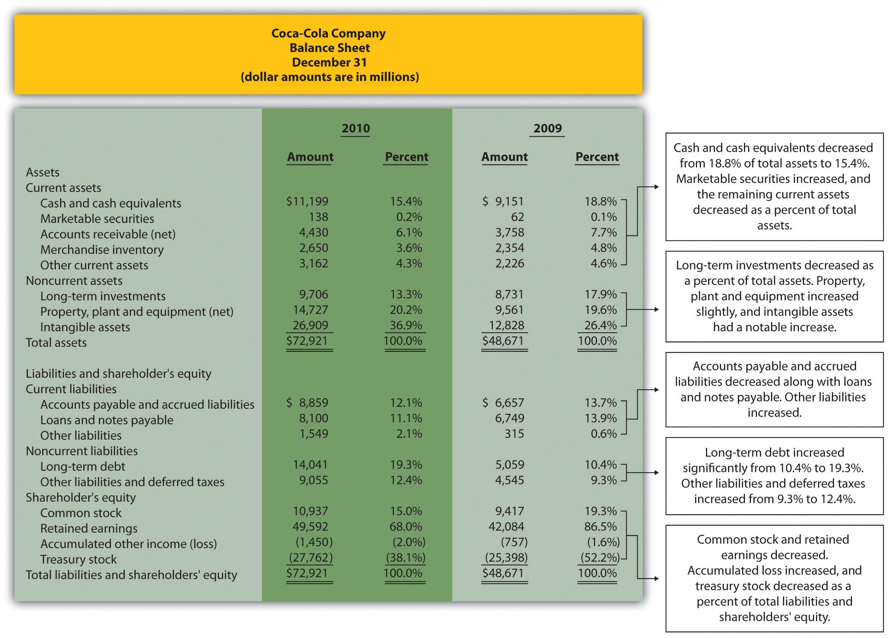
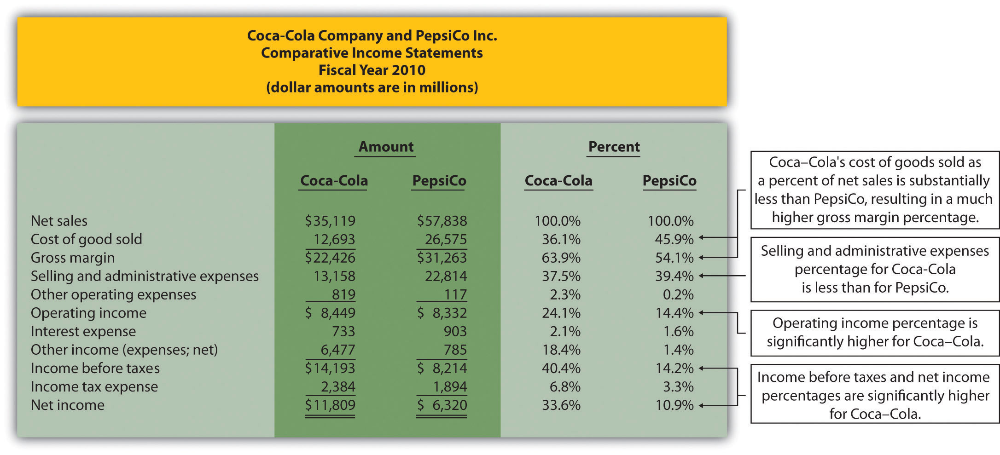
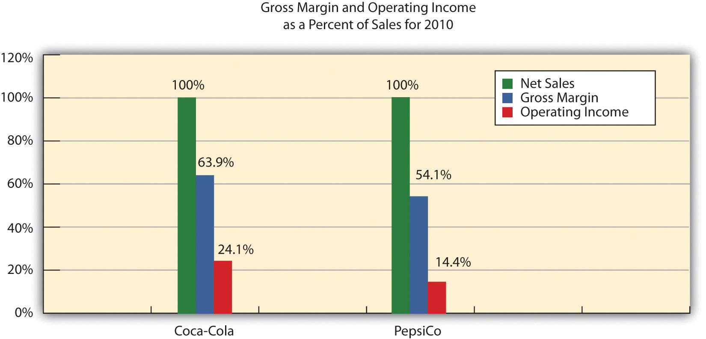
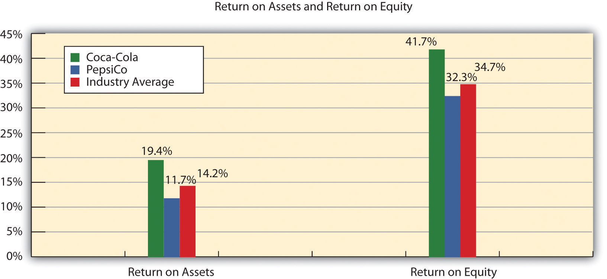

Source: Photo courtesy of Jon Seidman, http://www.flickr.com/photos/jonseidman1988/4481833335/.
Sandy Masako is the CEO of a fast-food restaurant called Chicken Deluxe. The company operates hundreds of restaurants throughout North America and is choosing between two suppliers of soft drinks: Deep Fizz Company and Extreme Fizz, Inc. Consumer surveys indicate no significant preference between the two. Sandy is meeting with Dave Roberts, the CFO, and Karen Kraft, the purchasing manager, to discuss the company’s options.
| Sandy (CEO): | We have a big decision to make. Our soft drink contract is up at the end of this year, and we need to decide on a supplier for next year. |
| Karen (Purchasing Manager): | I’ve had preliminary discussions with both Deep Fizz and Extreme Fizz, and the costs of their products are about the same. |
| Dave (CFO): | Based on extensive surveys with our customers, they are not particularly concerned about which supplier we choose, as long as it’s either Deep Fizz or Extreme Fizz. |
| Karen: | Both companies would like our business. This is a big contract for either of them! |
| Sandy: | OK, so we have two companies offering the same terms, and customers who would be satisfied with either company’s products. Are there any other criteria we should consider? |
| Dave: | We must have a supplier that is on solid financial ground. If our supplier were to have financial difficulties that jeopardized product quality or timing of deliveries, we would be in a bind. |
| Karen: | I agree. We need to determine whether these companies are in good financial shape. |
| Dave: | I suggest we have our accounting staff evaluate their financial information by analyzing and comparing certain key financial measures. |
| Sandy: | What do you have in mind? |
| Dave: | My staff can look at financial trends and calculate several different ratios to evaluate the strength of each company’s income statement and balance sheet. We can compare these ratios for both companies and also compare them to industry standards. This analysis should give us a better idea about the financial stability of each company. |
| Sandy: | Excellent! We have a few months to make our decision. How much time do you need? |
| Dave: | We can have it ready within a few weeks. |
| Sandy: | Great, let’s plan on reviewing your analysis next month. |
Chicken Deluxe is facing a supplier decision common to many companies. Financial stability is an important factor in deciding on a supplier, along with the quality of product and reliability of service. Chicken Deluxe must analyze financial information for Deep Fizz and Extreme Fizz to determine the financial condition of each company.
The analysis of a company’s financial information typically follows a three-pronged approach. First, trends within a company’s own financial information are analyzed, such as sales and earnings from one year to the next, using two methods—trend analysis and common-size analysis. Second, financial measures are compared between competitors. Finally, financial ratios are compared to industry averages. We discuss these three approaches next using Coca-Cola as an example. We will revisit the decision facing Chicken Deluxe later in the chapter.
Question: How is trend analysis used to evaluate the financial health of an organization?
Answer: Trend analysisAn analysis that evaluates financial information for an organization over a period of time and is typically presented as a dollar amount change and a percentage change. evaluates an organization’s financial information over a period of time. Periods may be measured in months, quarters, or years, depending on the circumstances. The goal is to calculate and analyze the amount change and percent change from one period to the next.
For example, in fiscal years 2010 and 2009, Coca-Cola had the operating income shown as follows. (Amounts are in millions. To convert to the actual amount, simply multiply the amount given times one million. For example, $8,449 × 1,000,000 = $8,449,000,000. Thus Coca-Cola had operating income of $8,449,000,000 in 2010.)
| Amount 2010 | Amount 2009 | Amount Change | Percent Change | |
| Operating income | $8,449 | $8,231 | ? | ? |
Although readers of the financial information can see that operating income increased from 2009 to 2010, the exact dollar amount of the change and the percent change is more helpful in evaluating the company’s performance. The dollar amount of change is calculated as follows:
Question: As you can see, operating income increased by $218,000,000 from 2009 to 2010. Is this a significant increase for Coca-Cola?
Answer: Most of us consider $218,000,000 to be a huge amount, but the only way to gauge the true significance of this amount for Coca-Cola is to calculate the percent change from 2009 to 2010. The percent changeCalculated as the current year amount minus the base amount; this is then divided by the base year amount. is calculated as the current year amount minus the base year amount, divided by the base year amount.
The calculation that follows shows operating income increased 2.6 percent from 2009 to 2010. Although not an extraordinarily significant increase, this does represent positive results for Coca-Cola.
Question: Trend analysis is often used to evaluate each line item on the income statement and balance sheet. How is this analysis prepared?
Answer: Figure 13.1 "Income Statement Trend Analysis for " shows Coca-Cola’s income statement trend analysis, and Figure 13.2 "Balance Sheet Trend Analysis for " shows Coca-Cola’s balance sheet trend analysis. Carefully examine each of these figures, including the comments.
Figure 13.1 Income Statement Trend Analysis for Coca-Cola
Note: Percent change for each line item is found by dividing the increase (decrease) amount by the 2009 amount. For example, net sales 13.3 percent increase equals $4,129 ÷ $30,990.
Figure 13.1 "Income Statement Trend Analysis for " shows that net sales increased by $4,129,000,000, or 13.3 percent. Cost of goods sold had a corresponding increase of $1,605,000,000, or 14.5 percent. The increase in net sales and related increase in cost of goods sold resulted in an increase in gross margin of $2,524,000,000, or 12.7 percent. The increase in selling and administrative expenses of $1,800,000,000, or 15.8 percent, outpaced the increase in net sales, resulting in a relatively small increase in operating income of $218,000,000, or 2.6 percent. The significant increase in other income (expenses), net of 555.6 percent relates to a one-time gain of $4,978,000,000 resulting from Coca-Cola’s acquisition of Coca-Cola Enterprises, Inc., in 2010 (this information comes from the notes to the financial statements). This one-time gain caused an unusually large increase in net income for 2010. This is important as we continue our analysis of Coca-Cola Company throughout the chapter. Net income will appear to have an unusually large increase as we cover various measures of performance, but keep in mind that the one-time gain in 2010 of $4,978,000,000 caused most of the increase from 2009 to 2010.
Figure 13.2 Balance Sheet Trend Analysis for Coca-Cola
Note: Percent change for each line item is found by dividing the increase (decrease) amount by the 2009 amount. For example, cash and cash equivalents 22.4 percent increase equals $2,048 ÷ $9,151.
Question: What does the balance sheet trend analysis in Figure 13.2 "Balance Sheet Trend Analysis for " tell us about current assets and current liabilities for Coca-Cola?
Answer: Figure 13.2 "Balance Sheet Trend Analysis for " shows that cash and cash equivalents increased by $2,048,000,000, or 22.4 percent. Coca-Cola’s statement of cash flows would provide detailed information regarding this increase. (Chapter 12 "How Is the Statement of Cash Flows Prepared and Used?" covers the statement of cash flows.) Marketable securities increased 122.6 percent, accounts receivable increased 17.9 percent, and merchandise inventory increased 12.6 percent. Other current assets increased 42.0 percent.
Moving to current liabilities, accounts payable and accrued liabilities increased by 33.1 percent, loans and notes payable increased 20.0 percent, and other current liabilities decreased 391.7 percent (mostly attributable to a significant increase in the current portion of long-term debt).
Question: What does the balance sheet trend analysis in Figure 13.2 "Balance Sheet Trend Analysis for " tell us about noncurrent assets and noncurrent liabilities for Coca-Cola?
Answer: Figure 13.2 "Balance Sheet Trend Analysis for " shows that long-term investments increased 11.2 percent. Property, plant, and equipment increased 54.0 percent, and intangible assets increased by a significant 109.8 percent. Both items appearing under noncurrent liabilities increased, with a 177.5 percent increase in long-term debt and a 99.2 percent increase in other liabilities and deferred taxes.
Question: What does the balance sheet trend analysis in Figure 13.2 "Balance Sheet Trend Analysis for " tell us about shareholders’ equity for Coca-Cola?
Answer: Common stock increased 16.1 percent, and retained earnings increased 17.8 percent. Accumulated other income (loss) went further into negative territory by 91.5 percent, and treasury stock increased 9.3 percent.
Question: What are some of the key big picture items identified in the balance sheet trend analysis shown in Figure 13.2 "Balance Sheet Trend Analysis for "?
Answer: Overall, total assets increased by $24,250,000,000, or 49.8 percent. Of course, total liabilities and shareholders’ equity also increased by the same amount. The increases identified in almost every asset, liability, and shareholders’ equity line item are significant. From reading the notes to the financial statements, the authors were able to identify the main source of these increases. In 2010, Coca-Cola acquired the remaining 67 percent of Coca-Cola Enterprises, Inc.’s (CCE) North America business that Coca-Cola did not already own. This resulted in significant increases in noncurrent assets and noncurrent liabilities, which were acquired as part of this transaction. It also resulted in the reporting of a one-time gain on the income statement of $4,978,000,000, which came from Coca-Cola remeasuring its equity interest in CCE to fair value upon close of the transaction in 2010.
This analysis points to the reason we perform trend analysis—to identify the increases and decreases in dollar amounts from one year to the next and to take a close look at unusual trends.
Question: The trend analysis just described works well when comparing financial data for two years. However, many prefer to review trends over more than two years. How might a trend analysis for several years be prepared?
Answer: A common approach is to establish the oldest year as the base year and compute future years as a percentage of the base year. For example, Coca-Cola had the following net sales and operating income for each of the past five years (in millions):
| 2010 | 2009 | 2008 | 2007 | 2006 | |
| Net sales | $35,119 | $30,990 | $31,944 | $28,857 | $24,088 |
| Operating income | $ 8,449 | $ 8,231 | $ 8,446 | $ 7,252 | $ 6,308 |
Assuming 2006 is the base year, the trend percentageCalculated as the current year amount divided by the base year amount. is calculated for each year using the following formula:
Figure 13.3 "Percentage Trend Analysis for " shows Coca-Cola’s trend percentages for net sales and operating income. Most analysts would expand this analysis to include most, if not all, of the income statement line items.
Figure 13.3 Percentage Trend Analysis for Coca-Cola
Note: Trend percentages are calculated as the current year divided by the base year (2006). For example, the net sales 2010 trend percentage of 146 percent equals $35,119 (net sales for 2010) divided by $24,088 (net sales for the base year 2006).
All percentages shown in Figure 13.3 "Percentage Trend Analysis for " are relative to the base year, which is fiscal year 2006. Notice that the increase in operating income of 34 percent (= 134 percent – 100 percent) from 2006 to 2010 was less than the increase in net sales of 46 percent for the same period. This signals that the increase in Coca-Cola’s operating expenses outpaced the increase in net sales during this period. Figure 13.4 "Five-Year Percentage Trend in Operating Income for " shows the trend percentages in Coca-Cola’s operating income from 2006 to 2010.
Figure 13.4 Five-Year Percentage Trend in Operating Income for Coca-Cola
Trends Presented in Annual Reports
Most public companies present trend information in their annual reports. For example, Intel shows net revenues, gross margin, research and development costs, operating income, and net income for the past five years. Nike and PepsiCo both show the percent change in selected income statement line items for the past two years. Costco Wholesale Corporation presents selected income statement information for the past five years. The fact that these financial data are provided in the annual report confirms the importance of presenting trend information to shareholders.
Sources: Intel, “Annual Report, 2010,” http://www.intel.com; Nike, “Annual Report, 2010,” http://www.nike.com; PepsiCo, “Annual Report, 2010,” http://www.pepsico.com; Costco Wholesale Corporation, “Annual Report, 2010,” http://www.costco.com.
The following income statements and balance sheets are for PepsiCo, Inc. We use this information in review problems throughout the chapter.

Solution to Review Problem 13.1
Note: Percent change for each line item is found by dividing the increase (decrease) amount by the 2009 amount. For example, net sales 33.8 percent increase equals $14,606 ÷ $43,232.
Note: Percent change for each line item is found by dividing the increase (decrease) amount by the 2009 amount. For example, cash and cash equivalents 50.7 percent increase equals $2,000 ÷ $3,943.
Question: How is common-size analysis used to evaluate the financial health of an organization?
Answer: Common-size analysisAn analysis that converts each line of financial statement data to an easily comparable amount measured in percent form. Income statement items are stated as a percent of net sales, and balance sheet items are stated as a percent of total assets (or total liabilities and shareholders’ equity); also called vertical analysis. (also called vertical analysis) converts each line of financial statement data to an easily comparable, or common-size, amount measured as a percent. This is done by stating income statement items as a percent of net sales and balance sheet items as a percent of total assets (or total liabilities and shareholders’ equity). For example, Coca-Cola had net income of $11,809,000,000 and net sales of $35,119,000,000 for 2010. The common-size percent is simply net income divided by net sales, or 33.6 percent (= $11,809 ÷ $35,119).
There are two reasons to use common-size analysis: (1) to evaluate information from one period to the next within a company and (2) to evaluate a company relative to its competitors. Common-size analysis answers such questions as “how do our current assets as a percent of total assets compare with last year?” and “how does our net income as a percent of net sales compare with that of our competitors?”
Question: How is a formal common-size analysis prepared, and what does it tell us for Coca-Cola?
Answer: Figure 13.5 "Common-Size Income Statement Analysis for " presents the common-size analysis for Coca-Cola’s income statement, and Figure 13.6 "Common-Size Balance Sheet Analysis for " shows the common-size analysis for Coca-Cola’s balance sheet. As you look at these figures, notice that net sales are used as the base for the income statement, and total assets (or total liabilities and shareholders’ equity) are used as the base for the balance sheet. That is, for the income statement, each item is measured as a percent of net sales, and for the balance sheet, each item is measured as a percent of total assets (or total liabilities and shareholders’ equity).
Figure 13.5 Common-Size Income Statement Analysis for Coca-Cola
Note: All percentages use net sales as the base. For example, 2010 cost of goods sold percent of 36.1 percent equals $12,693 cost of goods sold ÷ $35,119 net sales. Note that rounding issues sometimes cause subtotals in the percent column to be off by a small amount.
In general, managers prefer expenses as a percent of net sales to decrease over time, and profit figures as a percent of net sales to increase over time. As you can see in Figure 13.5 "Common-Size Income Statement Analysis for ", Coca-Cola’s gross margin as a percent of net sales decreased from 2009 to 2010 (64.2 percent versus 63.9 percent). Operating income declined as well (26.6 percent versus 24.1 percent). Income before taxes increased significantly from 28.6 percent in 2009 to 40.4 percent in 2010, again mainly due to a one-time gain of $4,978,000,000 in 2010. This caused net income to increase as well, from 22.0 percent in 2009 to 33.6 percent in 2010. In the expense category, cost of goods sold as a percent of net sales increased, as did other operating expenses, interest expense, and income tax expense. Selling and administrative expenses increased from 36.7 percent in 2009 to 37.5 percent in 2010.
Figure 13.6 Common-Size Balance Sheet Analysis for Coca-Cola
As you can see from Figure 13.6 "Common-Size Balance Sheet Analysis for ", the composition of assets, liabilities, and shareholders’ equity accounts changed from 2009 to 2010. Notable changes occurred for intangible assets (26.4 percent in 2009 versus 36.9 percent in 2010), long-term debt (10.4 percent in 2009 versus 19.3 percent in 2010), retained earnings (86.5 percent in 2009 versus 68.0 percent in 2010), and treasury stock (52.2 percent in 2009 versus 38.1 percent in 2010).
Question: To this point, we have used common-size analysis to evaluate just one company, Coca-Cola. Common-size analysis is, however, also an effective way of comparing two companies with different levels of revenues and assets. For example, suppose one company has operating income of $100,000, and a competing company has operating income of $2,000,000. If both companies have similar levels of net sales and total assets, it is reasonable to assume that the more profitable company is the better performer. However, most companies are not the same size. How do we compare companies of different sizes?
Answer: This is where common-size analysis can help. Figure 13.7 "Common-Size Income Statement Analysis for " shows an income statement comparison for Coca-Cola and PepsiCo using common-size analysis. (The information for Coca-Cola comes from Figure 13.5 "Common-Size Income Statement Analysis for ", and the information for PepsiCo comes from the solution to part 1 of Note 13.15 "Review Problem 13.2" at the end of this segment.)
Figure 13.7 Common-Size Income Statement Analysis for Coca-Cola and PepsiCo
Note that rounding issues sometimes cause subtotals in the percent column to be off by a small amount.
Notice that PepsiCo has the highest net sales at $57,838,000,000 versus Coca-Cola at $35,119,000,000. Once converted to common-size percentages, however, we see that Coca-Cola outperforms PepsiCo in virtually every income statement category. Coca-Cola’s cost of goods sold is 36.1 percent of net sales compared to 45.9 percent at PepsiCo. Coca-Cola’s gross margin is 63.9 percent of net sales compared to 54.1 percent at PepsiCo. Coca-Cola’s operating income is 24.1 percent of sales compared to 14.4 percent at PepsiCo. Figure 13.8 "Comparison of Common-Size Gross Margin and Operating Income for " compares common-size gross margin and operating income for Coca-Cola and PepsiCo.
Figure 13.8 Comparison of Common-Size Gross Margin and Operating Income for Coca-Cola and PepsiCo
Common-size analysis enables us to compare companies on equal ground, and as this analysis shows, Coca-Cola is outperforming PepsiCo in terms of income statement information. However, as you will learn in this chapter, there are many other measures to consider before concluding that Coca-Cola is winning the financial performance battle.
Common-size analysis is obviously crucial to comparative analysis. In fact, some sources of industry data present the information exclusively in a common-size format, and most of the accounting software available today has been engineered to facilitate this type of analysis.
Common-Size Analysis Using Accounting Software
Most accounting computer programs, including QuickBooks, Peachtree, and MAS 90, provide common-size analysis reports. You simply select the appropriate report format and financial statement date, and the system prints the report. Thus accountants using this type of software can focus more on analyzing common-size information than on preparing it.
Refer to the information presented in Note 13.10 "Review Problem 13.1" for PepsiCo, and perform the following:
Solution to Review Problem 13.2
Note: All percentages use net sales as the base. For example, 2010 cost of goods sold percent of 45.9 percent equals $26,575 cost of goods sold ÷ $57,838 net sales. Note that rounding issues sometimes cause subtotals in the percent column to be off by a small amount.
Note: All percentages use total assets or total liabilities and shareholders’ equity as the base. For example, 2010 cash and cash equivalents percent of 8.7 percent equals $5,943 ÷ $68,153. Note that rounding issues sometimes cause subtotals in the percent column to be off by a small amount.
The composition of PepsiCo’s income statement remained relatively consistent from 2009 to 2010. The most notable change occurred with selling and administrative expenses, which increased from 34.8 percent of sales in 2009 to 39.4 percent of sales in 2010. This in turn drove down operating income from 18.6 percent in 2009 to 14.4 percent in 2010. This also likely caused the decrease in income before taxes, income tax expense, and net income.
The composition of PepsiCo’s balance sheet had some significant changes from 2009 to 2010. The most notable changes occurred with intangible assets (23.0 percent in 2009 versus 41.8 percent in 2010), other assets (13.7 percent in 2009 versus 4.5 percent in 2010), short-term obligations (1.2 percent in 2009 versus 7.2 percent in 2010), long-term debt (18.6 percent in 2009 versus 29.3 percent in 2010), common stock (0.7 percent in 2009 versus 6.7 percent in 2010), and retained earnings (86.4 percent in 2009 versus 54.9 percent in 2010).
Question: Although reviewing trends and using common-size analysis provides an excellent starting point for analyzing financial information, managers, investors, and other stakeholders also use various ratios to assess the financial performance and financial condition of organizations. What are the four categories of ratios used to evaluate the financial health of an organization?
Answer: The four categories of ratios presented in this chapter are as follows (in order of presentation):
For each ratio, we (1) explain the meaning, (2) provide the formula, (3) calculate the ratio for Coca-Cola for two years, and (4) compare the ratio for Coca-Cola to PepsiCo’s ratio and industry averages. (Note: All industry averages throughout this chapter were obtained from http://moneycentral.msn.com. Some averages are not available or not applicable and will be noted as such.)
Table 13.1 "Financial Ratio Formulas" summarizes the formulas for all the ratios presented in this section, and Table 13.2 "Summary of Financial Ratios for " shows the ratio results for Coca-Cola, PepsiCo, and the industry averages that will be covered throughout this section.
Table 13.1 Financial Ratio Formulas
| Profitability Measures |
|
| Short-Term Liquidity Measures |
|
| Long-Term Solvency Measures |
|
| Market Valuation Measures |
|
Table 13.2 Summary of Financial Ratios for Coca-Cola, PepsiCo, and the Industry Average
| Coca-Cola 2010 | PepsiCo 2010 | Industry Average 2010 | ||
|---|---|---|---|---|
| Profitability Measures | ||||
| 1. | Gross margin ratio | 63.9 percent | 54.1 percent | 56.1 percent |
| 2. | Profit margin ratio | 33.6 percent | 10.9 percent | 19.2 percent |
| 3. | Return on assets | 19.4 percent | 11.7 percent | 14.2 percent |
| 4. | Return on common shareholders’ equity | 41.7 percent | 32.3 percent | 34.7 percent |
| 5. | Earnings per share | $5.12 | $3.97 | Not applicable |
| Short-Term Liquidity Measures | ||||
| 6. | Current ratio | 1.17 to 1 | 1.11 to 1 | 1.20 to 1 |
| 7. | Quick ratio | 0.85 to 1 | 0.80 to 1 | 1.10 to 1 |
| 8. | Receivables turnover ratio | 8.58 times | 10.57 times | 9.70 times |
| 9. | Average collection period | 42.54 days | 34.53 days | 37.63 days |
| 10. | Inventory turnover ratio | 5.07 times | 8.87 times | 7.50 times |
| 11. | Average sale period | 71.99 days | 41.15 days | 48.67 days |
| Long-Term Solvency Measures | ||||
| 12. | Debt to assets | 0.57 to 1 | 0.68 to 1 | 0.48 to 1 |
| 13. | Debt to equity | 1.33 to 1 | 2.17 to 1 | 0.94 to 1 |
| 14. | Times interest earned | 20.36 times | 10.10 times | 10.70 times |
| Market Valuation Measures | ||||
| 15. | Market capitalization | $146,500,000,000 | $100,700,000,000 | $87,500,000,000 |
| 16. | Price-earnings ratio | 12.48 times | 16.04 times | 14.60 times |
Before we discuss the various ratios, it is important to note that different terms are often used in financial statements to describe the same item. For example, some companies use the term net revenues instead of net sales, and the income statement is often called the statement of earnings, or consolidated statement of earnings. Also be sure to review the income statement and balance sheet information for Coca-Cola shown in Figure 13.5 "Common-Size Income Statement Analysis for " and Figure 13.6 "Common-Size Balance Sheet Analysis for ". We refer to these figures throughout this section. (All the dollar amounts given for Coca-Cola are in millions unless stated otherwise.)
Question: Analysts, shareholders, suppliers, and other stakeholders often want to evaluate profit trends within a company and compare a company’s profits with competitors’ profits. What are the five common ratios used to evaluate company profitability?
Answer: The five ratios used to evaluate profitability are as follows:
Question: How is the gross margin ratio calculated, and what does it tell us about Coca-Cola relative to PepsiCo and the industry average?
Answer: The gross margin ratioIndicates the gross margin generated for each dollar in net sales. Calculated as gross margin divided by net sales. indicates the gross margin generated for each dollar in net sales and is calculated as gross margin (which is net sales minus cost of goods sold) divided by net sales:
The gross margin ratio for Coca-Cola using 2010 information is calculated as follows, with PepsiCo and industry average information following it:
| Coca-Cola 2010 | Coca-Cola 2009 | PepsiCo 2010 | Industry Average 2010 | |
| Gross margin ratio | 63.9 percent | 64.2 percent | 54.1 percent | 56.1 percent |
The gross margin ratio indicates Coca-Cola generated 63.9 cents in gross margin for every dollar in net sales. This ratio decreased slightly from 2009 to 2010 and is substantially higher than PepsiCo’s 54.1 percent. Coca-Cola is also higher than the industry average of 56.1 percent. (Alternative terms: Gross margin is often called gross profit, net sales is often called net revenues, and cost of goods sold is often called cost of sales.)
Question: How is the profit margin ratio calculated, and what does it tell us about Coca-Cola relative to PepsiCo and the industry average?
Answer: The profit margin ratioIndicates the profit generated from each dollar in net sales. Calculated as net income divided by net sales. shows the profit generated for each dollar in net sales. It is calculated as net income divided by net sales:
The profit margin ratio for Coca-Cola using 2010 information is calculated as follows, with PepsiCo and industry average information following it:
| Coca-Cola 2010 | Coca-Cola 2009 | PepsiCo 2010 | Industry Average 2010 | |
| Profit margin ratio | 33.6 percent | 22.0 percent | 10.9 percent | 19.2 percent |
The profit margin ratio indicates Coca-Cola generated 33.6 cents in net income for every dollar in net sales. This ratio increased significantly from 2009 to 2010 and is substantially higher than PepsiCo’s 10.9 percent. Coca-Cola is also higher than the industry average of 19.2 percent. (Alternative term: Net income is often called net earnings.)
Question: The gross margin ratio and profit margin ratio focus solely on income statement information. Analysts also want to know what size asset base generated the net income. For example, a company with assets of $100,000 and net income of $15,000 is likely performing better than a company with assets of $300,000 and identical net income of $15,000. A measure that considers the assets required to generate net income is called return on assets. How is return on assets calculated, and what does it tell us about Coca-Cola relative to PepsiCo and the industry average?
Answer: The return on assetsIndicates the net income generated from each dollar in average assets. Calculated as net income divided by average total assets. ratio is used to evaluate how much net income was generated from each dollar in average assets invested. Return on assets is net income divided by average total assets:
The average total assets amount is found by adding together total assets at the end of the current year and previous year (2010 and 2009 for this example) and dividing by two. The return on assets ratio for Coca-Cola for 2010 is calculated as follows, with PepsiCo and industry average information following it:
| Coca-Cola 2010 | Coca-Cola 2009 | PepsiCo 2010 | Industry Average 2010 | |
| Return on assets | 19.4 percent | 15.3 percent | 11.7 percent | 14.2 percent |
The return on assets ratio indicates Coca-Cola generated 19.4 cents in net income for every dollar in average assets. This ratio increased from 2009 to 2010 and is higher than PepsiCo’s 11.7 percent. Coca-Cola exceeded the industry average of 14.2 percent.
(Note: There are several variations on the return on assets calculation. Some prefer to use average operating assets in the denominator. Others adjust net income in the numerator by adding back interest expense net of the interest expense tax benefit. We leave these variations to advanced cost and intermediate accounting textbooks.)
Question: How is the return on common shareholders’ equity ratio calculated, and what does it tell us about Coca-Cola relative to PepsiCo and the industry average?
Answer: Common shareholders are interested in the return on common shareholders’ equityIndicates the net income generated from each dollar of common shareholders’ equity. Calculated as net income minus preferred dividends divided by average common shareholders’ equity. ratio because this ratio tells them how much net income was generated from each dollar of common shareholders’ equity. The return on common shareholders’ equity ratio is calculated as follows:
Note that preferred dividends are deducted from net income in the numerator. If the company does not have any outstanding preferred stock, as is the case with Coca-Cola, the preferred dividends amount is zero.
Average common shareholders’ equity in the denominator is found by adding together all items in the shareholders’ equity section of the balance sheet at the end of the current year and previous year (2010 and 2009 for this example), except preferred stock items, and dividing by two.
Because Coca-Cola does not have preferred stock, an average of all items in the shareholders’ equity section is in the denominator. The return on common shareholders’ equity ratio for Coca-Cola for 2010 is calculated as follows, with PepsiCo and industry average information following it:
| Coca-Cola 2010 | Coca-Cola 2009 | PepsiCo 2010 | Industry Average 2010 | |
| Return on common shareholders’ equity | 41.7 percent | 29.5 percent | 32.3 percent | 34.7 percent |
The return on common shareholders’ equity ratio indicates Coca-Cola generated 41.7 cents in net income for every dollar in average common shareholders’ equity. This ratio increased significantly from 2009 to 2010 and is higher than PepsiCo’s 32.3 percent. Coca-Cola exceeded the industry average of 34.7 percent.
Coca-Cola’s return on common shareholders’ equity of 41.7 percent is higher than its return on assets of 19.4 percent, indicating that the company has positive financial leverage. Financial leverageIndicates the ability of a company to leverage common shareholders’ equity by taking on debt at an interest rate lower than the company’s return on assets. describes a company’s ability to leverage common shareholders’ equity by taking on debt at an interest rate lower than the company’s return on assets. For example, assume a company has equity of $10,000 earning 10 percent. The company can leverage this equity by borrowing $8,000 with a 6 percent interest rate. Assuming the company uses this $8,000 to purchase assets that earn 10 percent, the company has created positive financial leverage since the cost of borrowing is lower than the return on assets. This results in a return on equity that is higher than the return on assets. (Note: For a one-year period, the return on assets is $1,800 [= $18,000 × 10 percent] less the cost of debt of $480 [= 6 percent × $8,000], or $1,320. This results in a return on assets of 7.3 percent [= $1,320 ÷ $18,000]. Positive financial leverage causes the return on equity to be much higher at 13.2 percent [= $1,320 ÷ $10,000 equity].)
Although some level of financial leverage is generally regarded as healthy, companies that are highly leveraged tend to be riskier than similar companies with less leverage. Analysts and shareholders should avoid drawing quick conclusions that increases in return on common shareholders’ equity are always better than decreases without thoroughly reviewing the rest of the data.
Figure 13.9 "Return on Assets and Return on Equity for " shows the return on assets and return on equity for Coca-Cola, PepsiCo, and the industry average.
Figure 13.9 Return on Assets and Return on Equity for Coca-Cola, PepsiCo, and the Industry Average
Question: How is earnings per share calculated, and what does it tell us about Coca-Cola relative to PepsiCo and the industry average?
Answer: Earnings per shareIndicates how much net income was earned for each share of common stock outstanding. Calculated as net income minus preferred dividends divided by weighted average common shares outstanding. indicates how much net income was earned for each share of common stock outstanding. The earnings per share ratio states net income on a per share basis and is calculated as the following:
Note that preferred dividends are deducted from net income in the numerator. If the company does not have any outstanding preferred stock, as is the case with Coca-Cola, the preferred dividends amount is zero. The weighted average common shares outstanding amount used in the denominator is typically provided in the financial statements, either on the income statement or in the notes to the financial statements. (More advanced intermediate accounting textbooks discuss this calculation in detail. Throughout this chapter, we provide the number of weighted average common shares outstanding.)
Earnings per share for Coca-Cola using 2010 information is calculated as follows, with PepsiCo and industry average information following it (dollar amount and shares are in millions, except per share amount):
| Coca-Cola 2010 | Coca-Cola 2009 | PepsiCo 2010 | Industry Average 2010 | |
| Earnings per share | $5.12 | $2.95 | $3.97 | Not applicable |
The earnings per share amount at Coca-Cola indicates the company earned $5.12 for each share of common stock outstanding. This ratio increased from 2009 to 2010. Although earnings per share is useful for looking at trends over time within a company, it cannot be compared in any meaningful way from one company to another because different companies have different numbers of shares outstanding.
For example, assume two identical companies earn $10,000 for the year. One company has one share of common stock outstanding, and the other has two shares outstanding. Thus one company has earnings per share of $10,000 (= $10,000 ÷ 1 share) and the other company has earnings per share of $5,000 (= $10,000 ÷ 2 shares). The second company is not performing any worse; it simply has more shares outstanding. This is why you should not compare earnings per share across companies. (Alternative terms: Earnings per share are often called EPS or income per share.)
Source: Photo courtesy of DangApricot, http://commons.wikimedia.org/wiki/File:AnnTaylorLoftSign.JPG.
The Importance of Earnings per Share
The business press often uses earnings per share to announce a company’s earnings. For example, the Associated Press addressed earnings at AnnTaylor Stores Corporation, a retailer of women’s clothing, as follows: “Quarterly income fell to $7,100,000, or 10 cents per share, from $30,100,000, or 41 cents, the year before. Setting aside relocation costs, adjusted earnings were 18 cents per share, a penny higher than the average estimate from analysts polled by Thomson Financial.”
This quote demonstrates not only that earnings per share data are important when announcing a company’s earnings but also that analysts use these data when making predictions about a company’s performance. A quick perusal of any business publication, such as The Wall Street Journal, or a review of online business press releases at sites like http://finance.yahoo.com will confirm that earnings per share data are commonly used to announce a company’s financial results.
Source: Associated Press, “AnnTaylor’s 2Q Profit Plummets on Charge,” August 19, 2005.
Refer to the information presented in Note 13.10 "Review Problem 13.1" for PepsiCo, and perform the following for 2010:
Solutions to Review Problem 13.3
For every dollar in net sales, PepsiCo generated 54.1 cents in gross margin.
For every dollar in net sales, PepsiCo generated 10.9 cents in net income.
For every dollar in average assets, PepsiCo generated 11.7 cents in net income.
For every dollar in average common shareholders’ equity, PepsiCo generated 32.3 cents in net income (after deducting preferred dividends).
For each common share outstanding, PepsiCo generated $3.97 in net income (after deducting preferred dividends).
Question: Suppliers and other short-term lenders often want to evaluate whether companies can meet short-term obligations. What are the four common ratios used to evaluate short-term liquidity?
Answer: The four ratios used to evaluate short-term liquidity are as follows:
Question: How is the current ratio calculated, and what does it tell us about Coca-Cola relative to PepsiCo and the industry average?
Answer: The current ratioIndicates whether a company has enough current assets to cover current liabilities. Calculated as current assets divided by current liabilities. indicates whether a company has sufficient current assets to cover current liabilities. It is found by dividing current assets by current liabilities:
The current ratio for Coca-Cola for 2010 is calculated as follows, with PepsiCo and industry average information following it:
| Coca-Cola 2010 | Coca-Cola 2009 | PepsiCo 2010 | Industry Average 2010 | |
| Current ratio | 1.17 to 1 | 1.28 to 1 | 1.11 to 1 | 1.20 to 1 |
The current ratio indicates Coca-Cola had $1.17 in current assets for every dollar in current liabilities. This ratio decreased from 2009 to 2010 and is slightly higher than PepsiCo’s 1.11 to 1 ratio. Coca-Cola is close to the industry average of 1.20 to 1. In general, a current ratio above 1 to 1 is preferable, which indicates the company has sufficient current assets to cover current liabilities. However, finding the ideal minimum current ratio is dependent on many factors, such as the industry, the overall financial condition of the company, and the composition of the company’s current assets and current liabilities. Because of variations in these factors from one company to the next, a more stringent measure of short-term liquidity is often used. We present this measure, called the quick ratio, next.
Question: How is the quick ratio calculated, and what does it tell us about Coca-Cola relative to PepsiCo and the industry average?
Answer: The quick ratioIndicates whether a company has enough quick assets to cover current liabilities. Calculated as quick assets divided by current liabilities; also called acid-test ratio. (also called acid-test ratio) indicates whether a company has sufficient quick, or highly liquid, assets to cover current liabilities. The quick ratio is quick assets divided by current liabilities:
Notice the numerator excludes current assets that are not easily and quickly converted to cash. Although inventory is typically excluded from the numerator, further analysis is needed to evaluate whether inventory should be included. For example, grocery stores turn inventory over very quickly, typically within a couple of weeks, and should consider including inventory in the quick ratio. Producers of wine, on the other hand, turn inventory over very slowly, and should consider excluding inventory in the numerator of the quick ratio. For the sake of consistency, you should exclude inventory from the numerator in this chapter, unless told otherwise. (Note: Many companies provide two quick ratio calculations, one that includes inventory in the numerator and one that excludes inventory in the numerator. If two ratios are presented, it is important to label each ratio to indicate whether inventory has been included or excluded.)
It is helpful when reviewing a company’s balance sheet to remember that current assets are presented in order of liquidity, with the most liquid current asset appearing first and the least liquid appearing last. This helps in determining whether a particular current asset should be included or excluded in the numerator of the quick ratio. The quick ratio for Coca-Cola for 2010 is calculated as follows, with PepsiCo and industry average information following it:
| Coca-Cola 2010 | Coca-Cola 2009 | PepsiCo 2010 | Industry Average 2010 | |
| Quick ratio | 0.85 to 1 | 0.95 to 1 | 0.80 to 1 | 1.10 to 1 |
The quick ratio indicates Coca-Cola had $0.85 in quick assets for every dollar in current liabilities. This ratio decreased from 2009 to 2010 and is slightly higher than PepsiCo’s 0.80 to 1 ratio. Coca-Cola is below the industry average of 1.10 to 1.
Question: How is the receivables turnover ratio calculated, and what does it tell us about Coca-Cola relative to PepsiCo and the industry average?
Answer: The receivables turnover ratioIndicates how many times receivables are collected in a given period. Calculated as credit sales divided by average accounts receivable. indicates how many times receivables are collected in a given period and is found by dividing credit sales by average accounts receivable:
Assume all net sales presented on the income statement are on account, and therefore will be used in the numerator. The average accounts receivable amount in the denominator is found by adding together accounts receivable at the end of the current year and previous year (2010 and 2009 for this example) and dividing by two. The receivables turnover ratio for Coca-Cola for 2010 is calculated as follows, with PepsiCo and industry average information following it:
| Coca-Cola 2010 | Coca-Cola 2009 | PepsiCo 2010 | Industry Average 2010 | |
| Receivables turnover ratio | 8.58 times | 9.05 times | 10.57 times | 9.70 times |
The receivables turnover ratio indicates Coca-Cola collected receivables 8.58 times during 2010. This ratio decreased from 2009 to 2010 and is lower than PepsiCo’s 10.57 times. Coca-Cola is below the industry average of 9.70 times.
Question: How is the receivables turnover ratio converted to average collection period?
Answer: The receivables turnover ratio can be converted to the average collection periodIndicates how many days it takes on average to collect credit sales. Calculated as 365 days divided by receivables turnover ratio., which indicates how many days it takes on average to collect on credit sales, as follows:
This ratio is typically compared to the company’s credit terms to evaluate how effectively receivables are being collected. The average collection period for Coca-Cola for 2010 is calculated as follows, with PepsiCo and industry average information following it:
| Coca-Cola 2010 | Coca-Cola 2009 | PepsiCo 2010 | Industry Average 2010 | |
| Average collection period | 42.54 days | 40.33 days | 34.53 days | 37.63 days |
The average collection period indicates Coca-Cola collected credit sales in 42.54 days, on average. The number of days increased slightly from 2009 to 2010 and is higher than PepsiCo’s 34.53 days. Coca-Cola is also above the industry average of 37.63 days and therefore is slower at collecting accounts receivable than the industry as a whole.
Question: How is the inventory turnover ratio calculated, and what does it tell us about Coca-Cola relative to PepsiCo and the industry average?
Answer: The inventory turnover ratioIndicates how many times inventory is sold and restocked in a given period. Calculated as cost of goods sold divided by average inventory. indicates how many times inventory is sold and restocked in a given period. It is calculated as cost of goods sold divided by average inventory:
The average inventory amount in the denominator is found by adding together inventory at the end of the current year and previous year (2010 and 2009 for this example) and dividing by two. The inventory turnover ratio for Coca-Cola for 2010 is calculated as follows, with PepsiCo and industry average information following it:
| Coca-Cola 2010 | Coca-Cola 2009 | PepsiCo 2010 | Industry Average 2010 | |
| Inventory turnover ratio | 5.07 times | 4.88 times | 8.87 times | 7.50 times |
The inventory turnover ratio indicates Coca-Cola sold and restocked inventory 5.07 times during 2010. This ratio increased slightly from 2009 to 2010 and is substantially lower than PepsiCo’s 8.87 times. Coca-Cola is well below the industry average of 7.50 times.
Question: How is the inventory turnover ratio converted to average sale period?
Answer: The inventory turnover ratio can be converted to the average sale periodIndicates how many days it takes on average to sell the company’s inventory. Calculated as 365 days divided by inventory turnover ratio., which indicates how many days it takes on average to sell the company’s inventory, as follows:
The average sale period for Coca-Cola for 2009 is calculated as follows, with PepsiCo and industry average information following it:
| Coca-Cola 2010 | Coca-Cola 2009 | PepsiCo 2010 | Industry Average 2010 | |
| Average sale period | 71.99 days | 74.80 days | 41.15 days | 48.67 days |
The average sale period indicates Coca-Cola sold its inventory in 71.99 days, on average. The number of days decreased from 2009 to 2010 and is substantially higher than PepsiCo’s 41.15 days. Coca-Cola is also above the industry average of 48.67 days and therefore is slower at selling inventory than the industry as a whole.
Industry Variations in Inventory and Receivable Turnover
Retail grocery stores turn inventory over every 22 days, meaning that shelves are emptied and restocked about every three weeks. In addition to extremely fast inventory turnover, retail grocery stores collect credit sales in seven days. Thus it takes 29 days, on average, to convert freshly stocked inventory to cash. Very few industries are able to convert inventory to cash as quickly. Examples of inventory and receivable turnover for several industries are shown in the following.
| Receivables Turnover | Inventory Turnover | |
| Auto manufacturers | 39 days | 41 days |
| Chemical manufacturing | 51 days | 61 days |
| Forestry and wood products | 46 days | 53 days |
| Computer systems | 78 days | 18 days |
Source: Industry averages found at MSN Money, Home Page,” http://moneycentral.msn.com.
Refer to the information presented in Note 13.10 "Review Problem 13.1" for PepsiCo, and perform the following requirements for 2010:
Solution to Review Problem 13.4
For every dollar in current liabilities, PepsiCo had $1.11 in current assets.
For every dollar in current liabilities, PepsiCo had $0.80 in quick assets.
PepsiCo collected receivables 10.57 times during 2010.
PepsiCo collected credit sales in 34.53 days, on average.
PepsiCo sold and restocked inventory 8.87 times during 2010.
PepsiCo sold its inventory in 41.15 days, on average.
Question: Banks, bondholders, and other long-term lenders often want to evaluate whether companies can meet long-term obligations. What are the three common ratios used to evaluate long-term solvency?
Answer: The three ratios used to evaluate long-term solvency are as follows:
Question: How is the debt to assets ratio calculated, and what does it tell us about Coca-Cola relative to PepsiCo and the industry average?
Answer: The debt to assetsIndicates the percentage of assets funded by creditors. Calculated as total liabilities divided by total assets. ratio indicates the percentage of assets funded by creditors and is used to evaluate the financial leverage of a company. Debt to assets is found by dividing total liabilities by total assets:
The higher the percentage, the higher the financial leverage. The debt to assets ratio for Coca-Cola for 2010 is calculated as follows, with PepsiCo and industry average information following it:
| Coca-Cola 2010 | Coca-Cola 2009 | PepsiCo 2010 | Industry Average 2010 | |
| Debt to assets | 0.57 to 1 | 0.48 to 1 | 0.68 to 1 | 0.48 to 1 |
The debt to assets ratio indicates that creditors funded 57 percent of Coca-Cola’s assets at the end of 2010. This ratio increased from 2009 to 2010 and is lower than PepsiCo’s 0.68 to 1. Coca-Cola is higher than the industry average of 0.48 to 1.
A review of the basic balance sheet equation shows that the complement of the debt to assets ratio provides the percentage of assets funded by shareholders. Thus for every dollar Coca-Cola has in assets, creditors fund $0.57 and shareholders fund $0.43 (= $1 – $0.57):
The debt to assets ratio reveals Coca-Cola (0.57 to 1) and PepsiCo (0.68 to 1) are more highly leveraged than the industry average of 0.48 to 1.
Question: How is the debt to assets ratio calculated, and what does it tell us about Coca-Cola relative to PepsiCo and the industry average?
Answer: A variation of the debt to assets ratio is the debt to equityIndicates the balance of liabilities and shareholders’ equity used to fund assets. Calculated as total liabilities divided by total shareholders’ equity. ratio, which measures the balance of liabilities and shareholders’ equity used to fund assets. The debt to equity ratio is total liabilities divided by total shareholders’ equity:
This ratio indicates the amount of debt incurred for each dollar that owners provide. The debt to equity ratio for Coca-Cola for 2010 is calculated as follows, with PepsiCo and industry average information following it:
| Coca-Cola 2010 | Coca-Cola 2009 | PepsiCo 2010 | Industry Average 2010 | |
| Debt to equity | 1.33 to 1 | 0.92 to 1 | 2.17 to 1 | 0.94 to 1 |
The debt to equity ratio indicates that Coca-Cola had $1.33 in liabilities for each dollar in shareholders’ equity. This ratio increased from 2009 to 2010 and is substantially lower than PepsiCo’s 2.17 to 1. However, Coca-Cola is higher than the industry average of 0.94 to 1.
Source: Photo courtesy of spechtenhauser, http://www.flickr.com/photos/usinside/2931437356/.
Financial Leverage at General Motors and Toyota
Prior to the company’s bankruptcy filing in 2009, General Motors (GM) was the largest manufacturer of automobiles and trucks in the world (ranked by revenues). However, GM took on substantial amounts of debt over several years. With an average debt to equity ratio of 2.5 to 1, the automobile industry is relatively highly leveraged, but GM’s ratio was substantially higher at 11.3 to 1. This means that GM had $11.30 in debt for every $1 in shareholders’ equity.
Toyota Motor Corporation, on the other hand, was not highly leveraged; it had a debt to equity ratio of 1 to 1. Thus Toyota had $1 in debt for every $1 in shareholders’ equity. It is important to review other financial ratios before concluding that Toyota was in better financial shape than GM, but the fact that GM was much more highly leveraged than Toyota likely played a big role in GM’s downfall!
Source: Industry averages found at MSN Money, Home Page,” http://moneycentral.msn.com and Yahoo! Finance, “Home Page,” http://biz.yahoo.com.
Question: How is times interest earned calculated, and what does it tell us about Coca-Cola relative to PepsiCo and the industry average?
Answer: The times interest earnedIndicates the ability of a company to cover its interest expense with current period earnings. Calculated as income before income tax expense and interest expense divided by interest expense; also called interest coverage ratio. ratio (also called interest coverage ratio) measures the company’s ability to cover its interest expense related to long-term debt with current period earnings. The times interest earned ratio is net income before income tax expense and interest expense divided by interest expense:
Notice that income tax expense and interest expense are added back in the numerator to find net income available to cover interest expense. The times interest earned ratio for Coca-Cola for 2010 is calculated as follows, with PepsiCo and industry average information following it:
| Coca-Cola 2010 | Coca-Cola 2009 | PepsiCo 2010 | Industry Average 2010 | |
| Times interest earned | 20.36 times | 25.97 times | 10.10 times | 10.70 times |
The times interest earned ratio indicates Coca-Cola had earnings to cover interest expense 20.36 times. This ratio decreased from 2009 to 2010 and is much higher than PepsiCo’s 10.10 times. Coca-Cola is also higher than the industry average of 10.70 times. It appears that Coca-Cola has plenty of earnings to cover interest expense.
Refer to the information presented in Note 13.10 "Review Problem 13.1" for PepsiCo, and perform the following requirements for 2010:
Solution to Review Problem 13.5
Creditors funded 68 percent of PepsiCo’s assets. Owners funded the remaining 32 percent.
For every dollar in shareholders’ equity, PepsiCo had $2.17 in liabilities.
PepsiCo had earnings to cover interest expense 10.10 times.
Question: Existing and potential shareholders are often interested in a company’s market value. What are the two common measures used to evaluate market value?
Answer: The two measures used to determine and evaluate the market value of a company are as follows:
Question: How is market capitalization calculated, and what does it tell us about Coca-Cola relative to PepsiCo and the industry average?
Answer: Market capitalizationIndicates the value of a company at a point in time. Calculated as market price per share times the number of shares outstanding; also called market cap. (also called market cap) measures the value of a company at a point in time. It is determined by multiplying market price per share times the number of shares outstanding:
Coca-Cola’s market capitalization for 2010 is calculated as follows, with PepsiCo information following it. The number of shares outstanding at Coca-Cola’s fiscal year ended December 31, 2010, totaled 2,292,000,000 (= 3,520,000,000 shares issued – 1,228,000,000 treasury shares). The market price per share at that time was $63.92.
Market capitalization = $63.92 per share × 2,292,000,000 shares = $146,500,000,000| Coca-Cola 2010 | Coca-Cola 2009 | PepsiCo 2010 | Industry Average 2010 | |
| Market capitalization | $146,500,000,000 | $123,200,000,000 | $100,700,000,000 | $87,500,000,000 |
Coca-Cola’s market capitalization indicates that the company’s shares outstanding had a market value totaling $146,500,000,000 at the end of 2010. This amount increased significantly from 2009 to 2010 and is higher than PepsiCo’s $100,700,000,000. Both Coca-Cola and PepsiCo are above the industry average of $87,500,000.
(Note that the number of shares outstanding is typically found in the shareholders’ equity section of the balance sheet or in the notes to the financial statements. We provide the number of shares outstanding throughout this chapter, unless noted otherwise. This number is different than the weighted average shares outstanding used to calculate earnings per share earlier in the chapter. Also note that the price per share amount is from Yahoo’s finance Web site at http://finance.yahoo.com. We provide this information throughout the chapter, unless noted otherwise.)
Looking at a company’s market capitalization is a quick way of gauging its aggregate value. But what does a number like Coca-Cola’s $146,500,000,000 market capitalization really tell us about how a company compares to others? Note 13.54 "Business in Action 13.6" has the answer.
Three Categories of Market Capitalization
Most investors refer to market capitalization as market cap. Companies are typically classified into one of three market cap categories: small-cap, midcap, and large-cap. In general, small-cap companies have a market value of less than $1,000,000,000, midcap companies have a market value between $1,000,000,000 and $12,000,000,000, and large-cap companies have a market value greater than $12,000,000,000.
Thus small-cap mutual funds are stock funds that invest in companies with a market value of less than $1,000,000,000. Midcap mutual funds are stock funds that invest in companies with a market value between $1,000,000,000 and $12,000,000,000, and so on. These categories are important to investors because the stocks of small-cap companies tend to be more volatile than those of mid- or large-cap companies.
Source: Definitions are from the Web site of Vanguard, one of the world’s largest investment management firms (http://www.vanguard.com).
Question: How is the price-earnings ratio calculated, and what does it tell us about Coca-Cola relative to PepsiCo and the industry average?
Answer: The price-earnings ratioIndicates the premium investors are willing to pay for shares of stock relative to the company’s earnings. Calculated as market price per share divided by earnings per share; also called P/E ratio. (also called P/E ratio) measures the premium investors are willing to pay for shares of stock relative to the company’s earnings. The price-earnings ratio is found by dividing market price per share by earnings per share:
In general, a relatively high price-earnings ratio indicates investors expect favorable future earnings, whereas a relatively low price-earnings ratio indicates investors expect moderate future earnings. The price-earnings ratio for Coca-Cola for 2010 is calculated as follows, with PepsiCo and industry average information following it. The market price information was given in the market capitalization example, and we calculated earnings per share earlier in the chapter.
| Coca-Cola 2010 | Coca-Cola 2009 | PepsiCo 2010 | Industry Average 2010 | |
| Price-earnings ratio | 12.48 times | 18.21 times | 16.04 times | 14.60 times |
The price-earnings ratio indicates investors were willing to pay 12.48 times the earnings for Coca-Cola’s stock. This ratio decreased from 2009 to 2010 and is lower than PepsiCo’s 16.04 times. Coca-Cola is also lower than the industry average of 14.60 times.
Perform the following requirements for PepsiCo for 2010:
Solution to Review Problem 13.6
PepsiCo’s shares outstanding had a market value of $100,700,000,000 at the end of 2010.
Investors were willing to pay 16.04 times earnings for PepsiCo’s stock.
Recall the dialogue at Chicken Deluxe between Sandy Masako, the CEO; Dave Roberts, the CFO; and Karen Kraft, the purchasing manager. Chicken Deluxe must choose between Deep Fizz Company and Extreme Fizz, Inc., as the supplier of the company’s beverages. Dave was asked to evaluate the financial condition of each company and report back to the group. The group reconvenes the following month, where Dave presents the financial measures for each company. As you read the dialogue, refer to Table 13.3 "Summary of Financial Ratios for Deep Fizz Company; Extreme Fizz, Inc.; and the Industry Average"; it is the summary of financial measures that Dave provides to the group.
Table 13.3 Summary of Financial Ratios for Deep Fizz Company; Extreme Fizz, Inc.; and the Industry Average
| Deep Fizz | Extreme Fizz | Industry Average | ||||||
|---|---|---|---|---|---|---|---|---|
| Profitability Measures | ||||||||
| 1. | Gross margin ratio | 63.1 percent | 54.1 percent | 53.1 percent | ||||
| 2. | Profit margin ratio | 22.1 percent | 23.2 percent | 19.2 percent | ||||
| 3. | Return on assets | 15.1 percent | 17.3 percent | 14.2 percent | ||||
| 4. | Return on common shareholders’ equity | 36.5 percent | 34.9 percent | 34.7 percent | ||||
| 5. | Earnings per share | $2.01 | $3.76 | Not applicable | ||||
| Short-Term Liquidity Measures | ||||||||
| 6. | Current ratio | 0.85 to 1 | 1.25 to 1 | 1.20 to 1 | ||||
| 7. | Quick ratio | 0.62 to 1 | 0.87 to 1 | 1.10 to 1 | ||||
| 8. | Receivables turnover ratio | 9.10 times | 10.18 times | 9.70 times | ||||
| 9. | Average collection period | 40.11 days | 35.85 days | 37.63 days | ||||
| 10. | Inventory turnover ratio | 5.12 times | 7.86 times | 7.50 times | ||||
| 11. | Average sale period | 72.29 days | 46.44 days | 48.67 days | ||||
| Long-Term Solvency Measures | ||||||||
| 12. | Debt to assets | 0.34 to 1 | 0.38 to 1 | 0.48 to 1 | ||||
| 13. | Debt to equity | 0.67 to 1 | 0.86 to 1 | 0.94 to 1 | ||||
| 14. | Times interest earned | 31.60 times | 38.93 times | 10.70 times | ||||
| Market Valuation Measures | ||||||||
| 15. | Market capitalization | $91,800,000,000 | $86,500,000,000 | $87,500,000,000 | ||||
| 16. | Price-earnings ratio | 19.34 times | 20.31 times | 14.60 times | ||||
| Sandy: | Let’s get started! Dave, what do you have for us? |
| Dave: | I used several different financial ratios to evaluate profitability, short-term liquidity, long-term solvency, and market valuation for Deep Fizz Company and Extreme Fizz, Inc., Here is a summary of the results. Items 1 through 4 show that both companies are doing very well with regard to profitability, and exceed the industry average in all four categories. Earnings per share are not relevant for comparative purposes because different companies have different amounts of shares outstanding. |
| Sandy: | The profitability measures look good for both companies. What about the balance sheet? |
| Dave: | For the most part, Extreme Fizz has the edge on short-term liquidity, with top marks for all short-term liquidity measures. However, Deep Fizz is not far behind. Based on items 6 through 11, I consider both companies to have strong short-term liquidity. The only concern is with Deep Fizz’s slow inventory turnover, which is well below Extreme Fizz and the industry average. |
| Sandy: | What about long-term solvency? Given both companies have strong profitability and excellent short-term liquidity, my biggest concern is whether these companies are able to meet long-term obligations. |
| Dave: | The short answer is both companies will be able to meet long-term obligations as indicated in the debt to assets, debt to equity, and times interest earned ratios. Also notice that both companies have large market capitalizations, and price-earnings ratios are strong across the board! |
| Sandy: | So what do we get from all this information? |
| Dave: | Both companies are solid. We shouldn’t have to worry about either company having financial difficulties in the near future. |
| Karen: | Looks like we’ll have to review other factors in deciding which company to use as our supplier. |
| Sandy: | I agree. Thanks, Dave, for your analysis. If nothing else, this puts my mind at ease about whichever company we ultimately select as our supplier. |
As you can see from the Chicken Deluxe example, analysts use many different financial measures to evaluate financial performance. In the case of Deep Fizz and Extreme Fizz, both companies appear to be strong performers. Armed with this information, management can confidently choose either company knowing the winner will be on solid financial ground for years to come.
Question: Although financial measures are important for evaluation purposes, many organizations use a mix of financial and nonfinancial measures to evaluate performance. For example, airlines track on-time arrival percentages carefully, and delivery companies like Federal Express (FedEx) and United Parcel Service (UPS) monitor percentages of on-time deliveries. The balanced scorecard uses several alternative measures to evaluate performance. What is a balanced scorecard and how does it help companies to evaluate performance?
Answer: The balanced scorecardA balanced set of financial and nonfinancial measures used by organizations to motivate employees and evaluate performance. is a balanced set of measures that organizations use to motivate employees and evaluate performance. These measures are typically separated into four perspectives outlined in the following. (Dr. Robert S. Kaplan and Dr. David P. Norton created the balanced scorecard, and it is actively promoted through their company, Balanced Scorecard Collaborative. More information can be found at the company’s Web site at http://www.bscol.com.)
The goal is to link these four perspectives to the company’s strategies and goals. For example, a high percentage of on-time arrivals is likely an important goal from the perspective of the customer of an airline. A high percentage of defect-free computer chips is likely an important goal from the internal business process perspective of a computer chip maker. A high number of continuing education hours is likely an important goal from the learning and growth perspective for tax personnel at an accounting firm. Measures from a financial perspective were covered earlier in this chapter.
Companies that use the balanced scorecard typically establish several measures for each perspective. Table 13.4 "Balanced Scorecard Measures" lists several examples of these measures.
Table 13.4 Balanced Scorecard Measures
| Financial | Internal Business Process | Learning and Growth | Customer |
|---|---|---|---|
| Gross margin ratio | Defect-free rate | Hours of employee training | Customer satisfaction (survey) |
| Return on assets | Customer response time | Employee satisfaction (survey) | Number of customer complaints |
| Receivables turnover | Capacity utilization | Employee turnover | Market share |
| Inventory turnover | New product development time | Number of employee accidents | Number of returned products |
Measures established across the four perspectives of the balanced scorecard are linked in a way that motivates employees to achieve company goals. For example, if the company wants to increase the defect-free rate and reduce product returns, effective employee training and low employee turnover will help in achieving this goal. The idea is to establish company goals first, then create measures that motivate employees to reach company goals.
Assume Chicken Deluxe, the fast-food restaurant franchise featured in this chapter, uses a balanced scorecard. Provide at least two examples of measures that Chicken Deluxe might use for each of the following perspectives of the balanced scorecard:
Solution to Review Problem 13.7
Answers will vary. Several examples of financial measures are as follows:
Answers will vary. Several examples of internal business process measures are as follows:
Answers will vary. Several examples of learning and growth measures are as follows:
Answers will vary. Several examples of customer perspective measures are as follows:
Questions
Brief Exercises
Evaluating Suppliers at Chicken Deluxe. Refer to the dialogue at Chicken Deluxe presented at the beginning of the chapter and the follow-up dialogue immediately following Note 13.58 "Review Problem 13.6".
Required:
Trend Analysis. The following condensed income statement is for Apple, Inc.
Required:
Prepare a trend analysis of the income statements from 2010 to 2011. Use the format shown in Figure 13.1 "Income Statement Trend Analysis for " as a guide. (Round percent computations to one decimal place.)
Common-Size Analysis. Refer to the condensed income statement for Apple, Inc., in Brief Exercise 14.
Required:
Prepare a common-size analysis of the income statements for 2010 and 2011. Use the format shown in Figure 13.5 "Common-Size Income Statement Analysis for " as a guide. (Round percent computations to one decimal place.)
Gross Margin and Profit Margin Ratios. Refer to the condensed income statement for Apple, Inc., in Brief Exercise 14.
Required:
Compute the following profitability ratios for 2011, and provide a brief explanation after each ratio (round computations to one decimal place):
Current and Quick Ratios. A condensed balance sheet for Apple, Inc., appears in the following.
Required:
Compute the following short-term liquidity ratios for 2011, and provide a brief explanation after each ratio (round computations to two decimal places):
Long-Term Solvency Ratios. Refer to the condensed balance sheet for Apple, Inc., in Brief Exercise 17.
Required:
Compute the following long-term solvency ratios for 2011, and provide a brief explanation after each ratio (round computations to two decimal places):
Market Capitalization. On September 24, 2011, Apple, Inc., had 929,277,000 shares of common stock issued and outstanding, and the market price per share on that date was $403.33.
Required:
Compute Apple’s market capitalization at September 24, 2011, and provide a brief explanation of what this measures represents (state the answer in billions).
Exercises: Set A
Trend Analysis. The following condensed income statement is for CarMax, Inc., a large retailer of used vehicles.
Required:
Common-Size Analysis. Refer to the condensed income statement for CarMax, Inc., in Exercise 21.
Required:
Profitability Ratios. Refer to the condensed income statement for CarMax, Inc., in Exercise 21 and to the company’s balance sheet shown as follows.
Required:
Compute the following profitability ratios for 2011, and provide a brief explanation after each ratio (round percentage computations to one decimal place and earnings per share to two decimal places):
Short-Term Liquidity Ratios. Refer to the condensed income statement for CarMax, Inc., in Exercise 21 and to the company’s balance sheet in Exercise 23.
Required:
Compute the following short-term liquidity ratios for 2011, and provide a brief explanation after each ratio (round computations to two decimal places):
Long-Term Solvency Ratios. Refer to the condensed income statement for CarMax, Inc., in Exercise 21 and to the company’s balance sheet in Exercise 23.
Required:
Compute the following long-term solvency ratios for 2011, and provide a brief explanation after each ratio (round computations to two decimal places):
Market Valuation Measures. The following requirements are for CarMax, Inc., as of February 28, 2011.
Required:
Compute the following market valuation measures for 2011, and provide a brief explanation after each measure (state market capitalization in billions, and round price-earnings ratio to two decimal places):
Balanced Scorecard Customer Measures. Tech University has more than 10,000 students enrolling in courses each term. The management would like to develop a balanced scorecard to assess performance.
Required:
Provide at least three customer measures Tech University can use on its balanced scorecard. Assume students are the customers.
Exercises: Set B
Trend Analysis. The following condensed income statement is for Colgate-Palmolive Company, a large retailer of personal and home care products.
Required:
Common-Size Analysis. Refer to the condensed income statement for Colgate-Palmolive Company in Exercise 28.
Required:
Profitability Ratios. Refer to the condensed income statement for Colgate-Palmolive Company in Exercise 28. Assume the company paid preferred dividends totaling $34,000,000 during 2010. (The company had preferred stock outstanding during 2010, but eliminated all preferred stock by the end of 2010. This is why preferred stock has a zero balance as of December 31, 2010.)
Required:
Compute the following profitability ratios for 2010, and provide a brief explanation after each ratio (round percentage computations to one decimal place and earnings per share to two decimal places):
Short-Term Liquidity Ratios. Refer to the condensed income statement for Colgate-Palmolive Company in Exercise 28 and to the company’s balance sheet in Exercise 30.
Required:
Compute the following short-term liquidity ratios for 2010, and provide a brief explanation after each ratio (round computations to two decimal places):
Long-Term Solvency Ratios. Refer to the condensed income statement for Colgate-Palmolive Company in Exercise 28 and to the company’s balance sheet in Exercise 30.
Required:
Compute the following long-term solvency ratios for 2010, and provide a brief explanation after each ratio (round computations to two decimal places):
Market Valuation Measures. The following requirements are for Colgate-Palmolive Company as of December 31, 2010.
Required:
Compute the following market valuation measures for 2010, and provide a brief explanation after each measure (state market capitalization in billions, and round price-earnings ratio to two decimal places):
Balanced Scorecard Internal Business Process Measures. Tony’s Pizzeria serves pizzas at its restaurants and provides delivery services to customers. The management would like to develop a balanced scorecard to assess performance.
Required:
Provide at least three internal business process measures Tony’s Pizzeria can use on its balanced scorecard.
Problems
Trend Analysis and Common-Size Analysis. The following condensed income statement and balance sheet are for Nordstrom, Inc., a large retailer of apparel. (Note that Nordstrom’s 2010 fiscal year ends on January 29, 2011. This is called the 2010 fiscal year because only one month is in 2011, the other 11 months of the fiscal year are in 2010, and the company has chosen to refer to this as the 2010 fiscal year. This same concept applies to fiscal year 2009.)

Required:
Profitability and Short-Term Liquidity Ratios. Refer to the information presented in Problem 35 for Nordstrom.
Required:
Compute the following profitability ratios for 2010, and provide a brief explanation after each ratio (round percentage computations to one decimal place and earnings per share to two decimal places):
Compute the following short-term liquidity ratios for 2010, and provide a brief explanation after each ratio (round computations to two decimal places):
Long-Term Solvency Ratios and Market Valuation Measures. Refer to the information presented in Problem 35 for Nordstrom.
Required:
Compute the following long-term solvency ratios for 2010, and provide a brief explanation after each ratio (round computations to two decimal places):
Compute the following market valuation measures for 2010, and provide a brief explanation after each measure (state market capitalization in billions, and round price-earnings ratio to two decimal places):
Income Statement Trend, Common-Size, and Profitability Analysis. The following condensed income statement and balance sheet are for Starbucks Corporation, a large retailer of specialty coffee with stores throughout the world.
Required:
Compute the following profitability ratios for 2011, and provide a brief explanation after each ratio (round percentage computations to one decimal place and earnings per share to two decimal places):
Short-Term Liquidity, Long-Term Solvency, and Market Valuation. Refer to the information presented in Problem 38 for Starbucks.
Required:
Compute the following short-term liquidity ratios for 2011, and provide a brief explanation after each ratio (round computations to two decimal places):
Compute the following long-term solvency ratios for 2011, and provide a brief explanation after each ratio (round computations to two decimal places):
Compute the following market valuation measures for 2011, and provide a brief explanation after each measure (state market capitalization in billions, and round price-earnings ratio to two decimal places):
Balance Sheet Trend and Common-Size Analysis. The following condensed income statement and balance sheet are for Wal-Mart Stores, Inc. (note that Wal-Mart’s 2010 fiscal year ends on January 31, 2011. This is called the 2010 fiscal year because only one month is in 2011, the other 11 months of the fiscal year are in 2010, and the company has chosen to refer to this as the 2010 fiscal year. This same concept applies to fiscal year 2009.)
Required:
Income Statement Trend and Common-Size Analysis; Profitability Ratios. Refer to the information presented in Problem 40 for Wal-Mart.
Required:
Compute the following profitability ratios for 2010, and provide a brief explanation after each ratio (round percentage computations to one decimal place and earnings per share to two decimal places):
Short-Term Liquidity, Long-Term Solvency, Market Valuation, and Balanced Scorecard. Refer to the information presented in Problem 40 for Wal-Mart.
Required:
Compute the following short-term liquidity ratios for 2010, and provide a brief explanation after each ratio (round computations to two decimal places):
Compute the following long-term solvency ratios for 2010, and provide a brief explanation after each ratio (round computations to two decimal places):
Compute the following market valuation measures for 2010, and provide a brief explanation after each measure (state market capitalization in billions, and round price-earnings ratio to two decimal places):
One Step Further: Skill-Building Cases
Internet Project: Financial Statement Analysis. Using the Internet, find the most recent annual report (or form 10K) for a manufacturing or retail company of your choice. Most companies have links to the information at their Web sites under titles, such as investor relations or financial reports. Print the income statement and balance sheet for the company selected and include these documents with your response to the following requirements.
Required:
Compute the following profitability ratios for the most current year, and provide a brief explanation after each ratio (round percentage computations to one decimal place):
Compute the following short-term liquidity ratios for the most current year, and provide a brief explanation after each ratio (round computations to two decimal places):
Compute the following long-term solvency ratios for the most current year, and provide a brief explanation after each ratio (round computations to two decimal places):
Group Activity: Analyzing Lowe’s Companies, Inc. The condensed income statement and balance sheet information provided as follows is for Lowe’s Companies, Inc., a large retail company that sells building materials and supplies. Lowe’s had 1,354,000,000 shares issued and outstanding at January 28, 2011, and the market price per share on that date was $24.83. (Note that Lowe’s 2010 fiscal year ends on January 28, 2011. This is called the 2010 fiscal year because only one month is in 2011, the other 11 months of the fiscal year are in 2010, and the company has chosen to refer to this as the 2010 fiscal year. This same concept applies to fiscal year 2009.)
Form groups of two to four students. Each group is to be assigned one of the following three categories of financial measures:
Profitability measures
Short-term liquidity measures
Long-term solvency and market valuation measures
Required:
Performing Income Statement Trend Analysis Using Excel. Review the information for Apple, Inc., in Brief Exercise 14.
Required:
Perform income statement trend analysis for Apple, Inc., using an Excel spreadsheet. The format should be similar to the one in Figure 13.1 "Income Statement Trend Analysis for ". Round percent computations to one decimal place.
Comprehensive Cases
Financial Statement Analysis and Industry Standards; Manufacturing Company. Susan Hartford is the president and CEO of Computer Makers, Inc. The company is in the process of looking for a supplier of computer chips, and Susan has asked her staff to review the financial stability of Intel Corporation, the world’s largest maker of computer chips. Susan’s staff began by collecting industry average information, which is shown as follows, and would like your help in calculating and evaluating these measures for Intel.
| Measure | Industry Average | Intel |
| Gross margin | 57.7 percent | ? |
| Profit margin | 21.9 percent | ? |
| Return on assets | 17.7 percent | ? |
| Return on common shareholders’ equity | 21.5 percent | ? |
| Current ratio | 2.3 to 1 | ? |
| Quick ratio | 1.9 to 1 | ? |
| Receivables turnover | 12.8 times | ? |
| Inventory turnover | 4.8 times | ? |
| Debt to assets | 0.21 to 1 | ? |
| Debt to equity | 0.26 to 1 | ? |
| Market capitalization | $80,000,000,000 | ? |
Intel’s income statement and balance sheet are provided as follows. The price for 1 share of common stock at December 25, 2010, the end of Intel’s fiscal year, was $20.13. The number of shares issued and outstanding at December 25, 2010, totaled 5,581,000,000. Assume all sales were on account.
Required:
Summarize your results in requirement a by completing a table using the following headings:
| Measure | Industry Average | Intel Corporation |
Immediately following each measure, indicate whether Intel’s financial condition is better or worse than the industry average.
Ethics: Manipulating Data to Meet Loan Requirements. Custom Tech, Inc., designs and produces computers for a variety of customers. The company has encountered a cash shortage resulting from collection problems with several customers. If Custom Tech is unable to collect a significant portion of its receivables relatively soon, the company will not be able to pay suppliers and employees next quarter. As a result, Custom Tech’s president, Don Lardner, began discussions with a local bank about obtaining a short-term loan. Don did not mention the cause of the cash flow shortage other than to say, “This happens the same time every year due to the cyclical nature of our business.”
In a meeting with the bank’s loan officer, Jan Johnson, Don was told the loan should not be a problem as long as Custom Tech maintains a profit margin ratio above 10 percent, quick ratio above 1.0 to 1, and debt to equity ratio below 1.4 to 1. Don indicated this was in line with his company’s performance and agreed to provide financial statements for the most recent year at their next meeting.
The financial statements shown as follows are for Custom Tech’s most recent year ended December 31. This information has not yet been provided to the bank.
Required: